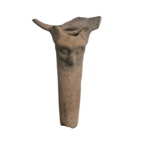
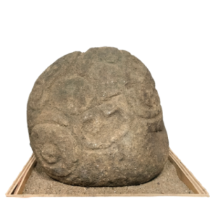
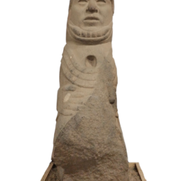
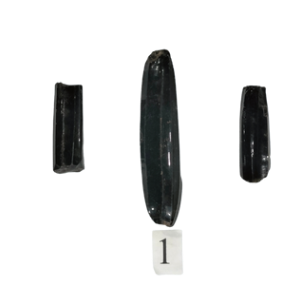
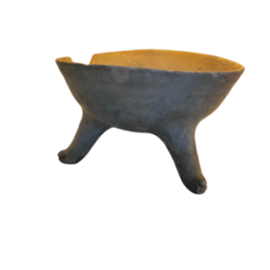
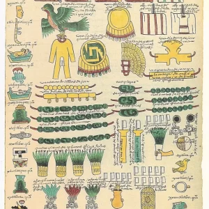

Museo Regional Casa Verde
Inicio
Historia
Museo
Patronato
Galería
Planta Alta
Felipe Matías Velazco
Arte contemporáneo
Miguel Vélez Arceo
Fonoteca Elías Meléndez Núñez
Planta Baja
Arqueología
Historia
Textil
Vainilla Chinanteca
Convocatorias
Apoyos Solidarios
Tour
Créditos
Contacto
Arqueología

Cajetes

Piedras Arqueológicas

Representación femenina de la tierra fértil

Liticas Talladas y Pulidas

Vasijas

La ocupación mexica en la cuenca del papaloapan y el pago de tributos